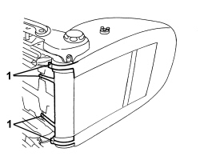
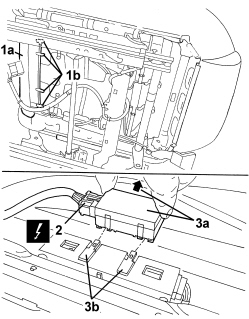

7045M32 ELECTRONIC THERMOSTAT FOR HEATING CIRCUIT OF ONE FRONT SEAT, LH OR RH R R
- Path
- Procedures > 70 FITTINGS > 7045 FRONT SEATS > 7045M FRONT SEAT HEATING > 7045M32 ELECTRONIC THERMOSTAT FOR HEATING CIRCUIT OF ONE FRONT SEAT, LH OR RH R R
- Kind
- repair procedure (removal / refitting; the operation number is the code)
- Applies to
- all engines; all production periods
- Interactive page
- https://sloeber94.github.io/elrnDB/alfa/159/en/#/939005570
Applies to: all engines; all production periods
 Removing
Removing
 Refitting
Refitting- Raise the seat until it is in the end of travel position.
1. Disconnect the backrest trim links.

Applies to: all engines; all production periods
1. Release the rear part (1a) of the cushion trim from retainers (1b).
2. Disconnect the electrical connection for the seat heating control unit.
Description | Component |
|---|---|
PASSENGER FRONT SEAT HEATER CONTROL UNIT | |
DRIVER'S FRONT SEAT HEATER CONTROL UNIT |
3. Move control unit (3a) in the arrowed direction, releasing from retainers (3b).

Applies to: all engines; all production periods
Refitting
Removing- Check that the control unit is not damaged.
- Position the control unit and attach the retainers.
- Disconnect the electrical connection for the ABS control unit.
- Connect the rear part of the cushion trim to the retainers.
- Connect the backrest trim links.
- Move the seat to an intermediate height.
- Check that the heat pads operate properly.